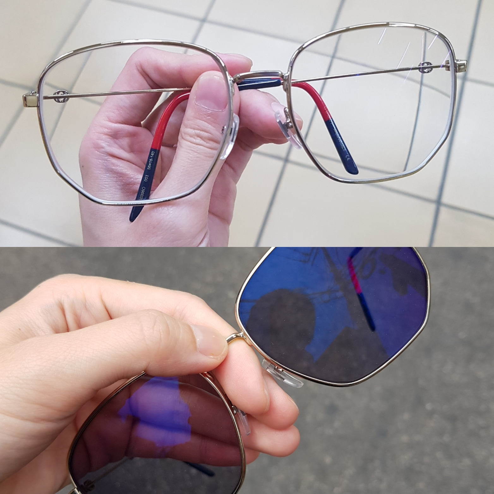

요번에 새로 구입한 구찌 프레임에 변색렌즈를 넣어 봤습니다.
변색렌즈를 알게된건 허구헌날 프레임 사재끼고 렌즈를 맞추러 안경점을 들락거리면서
선글라스를 좋아하는데 나같은 경우는 선글쓸려면 렌즈껴야해서 넘 귀찮다~라고 하소연 했더니
알려주셨습니다 ㅋㅋㅋ
그리고 얼마후 암수살인 이란 영화를 개봉하자마자 봤었는데
악당역을 맡은 주지훈이 정보제공 대가로 요 변색렌즈가 들어간 안경을 요구하는 장면이 있었더랬죠.
영화를 보면서 '망해따;;; 이제 변색렌즈가 살인마의 아이템이 되어버렸잖아' 란 생각을 했었습니다 ㅋㅋ
원래는 영국놀러갈 때 면세에서 구매한 비비안 선글라스에 변색렌즈를 넣을 생각이었으나
막상 안경점가서 선글라스 렌즈를 뺀 안경으로 쓸 때의 모습을 확인하니 영 별로라 마음을 바꿨더랬죠 :p
애니웨이!!
대만족 입니다!! 넘 좋아요!! :D :D
밖에서는 선글 / 안에서는 안경으로 쓸 수 있어용 홍홍 :)
생각보다 엄청 빨리 변하지는 않아요.(이거야 가격이 올라가면 변하는 속도도 빨라지긴 합니다만^^)
밖에 나가서 한블럭 정도 슬렁슬렁 걸어가면 서서히 어두워지는 그런 느낌적 느낌 ^^
첨에 요 프레임이 쓰면 넘 아프길래;; 망했나;; 싶었는데 ^^;;; 다시 피팅받고 2~3일 지나니 익숙해 졌습니다.
만쉐~ 넘 맘에듭니다아!!
2. 도레이씨 안경닦이
열심히 검색하고 사람들이 추천하는 제품 열심히 사봅니다 ^^;;
원래 안경닦는 천은 렌즈맞출때 그냥 선물로 받는 그런건데
뭘 이걸 6천원-만원돈을 주고 구매하나 싶었는데
여러분 사세여!! 신기할 정도로 깨끗하게 잘 닦입니다. :D
검색해보니 2마이크론의 초극세사 클리너 - 라고 하는군욤.
6월에 일본가는데 가서 쟁여와야겠어요 +_+
3. 부산락페 / 톰요크
부산락페가 올해 유료전환 한다는 소식을 듣고
놀러갈겸 뒤에서 콜라마시면서 꿀렁꿀렁 거리다가 올까~란 생각을 하고
티켓오픈일만 기다리고 있었는데 같은날 서울에서 톰요크 공연.
톰요크 티켓 구매했습니다 :D
6월 ~10월까지 듬성듬성 공연티켓 예매해 놨는데
이거 기다리면서 성실히(?) 로동할렵니다.